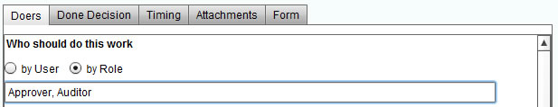
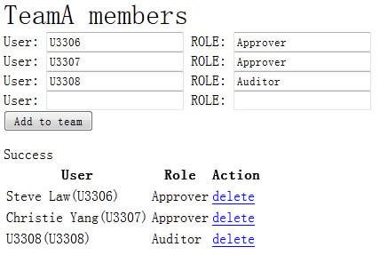

MWF users should have MWF accounts, either they are programmers or who should be assigned workflow tasks.
A programmer can import many accounts in batch mode. (For instance, if you are develop an application for Comapny A, you may not ask all employees in Company A to register MWF accounts manually by themselves, instead, you call MWF APIs to import their accounts, later, they can modify their passwords by themselves).
MWF use "organization" to seperate workflow participating boundary, a user and other users within same organization are "peers", a user can add only peers to his/her working team. When assign work directly, only peers can be used.
User |
Peers |
A |
B, C, D |
B |
A, D |
C |
A |
D |
A, B |
A workflow template define the task nodes, participants and routines among these tasks.
A doer is a MWF user who will be assigned tasks. MWF dispatch tasks to doer's worklist. When doer complete a task, MWF drive processes to next task.
In workflow template, a task can be assigned to user(s) or role(s).
Although assign work to specific user(s) is okay, MWF suggests assign work(s) to role(s) instead because this is very flexible. A team defines maps between a role to user(s), when a workflow is started, MWF will get these maps and dispatch works to the role participatns.
A process is a workflow instance. When start a workflow, a team should be provided to resolve role participation, if the working team is not provided, or a role defined in workflow template does not exist in the provided team, the participate for the task will be assigned to who start the workflow, the process starter.

The above image shows a task will be done by roles "Approver" and "Auditor".

and in TeamA, U3306 and U3307 take the role as Approver, U3308 takes the role of Auditor, then if a workflow is started with TeamA, then the task originally assigned to role Approver and Auditor will be actually assigned to U3306, U3307 and U3308.